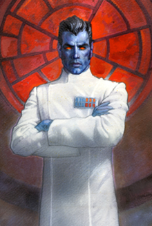

Grand Admiral Thrawn, also known by his native name Mitth'raw'nuruodo, was a Chiss military commander who served the Galactic Empire. Renowned as the most brilliant strategist in galactic history, Thrawn rose through the ranks to become the only alien grand admiral, despite the anti-alien sentiments that were common in the Empire. He studied the artistic works of civilizations he fought against to better understand them, giving him an ability to predict his opponents' moves that bordered on the supernatural. Unlike commanders like Darth Vader, Thrawn was greatly beloved by his subordinates—such as his right-hand man, Captain Gilad Pellaeon—choosing to inspire loyalty rather than rule through fear. Thrawn despised the politics and infighting that plagued the Empire, and was willing to set aside his own glory in favor of the greater good for the Empire. On occasion, he was even known to defy Emperor Palpatine himself by refusing to attack Palpatine's targets when he knew that he lacked the resources to pull it off. Despite his loyalty to the Empire, Thrawn was not inherently evil; ultimately, his end goal was to fortify the galaxy under the Empire's rule in preparation for an imminent invasion of the extra-galactic Yuuzhan Vong aliens. After the Empire was fragmented with the deaths of Palpatine and Vader at the Battle of Endor, Thrawn emerged as the last surviving grand admiral. Armed with the legendary Katana fleet and with help from the insane Dark Jedi clone Joruus C'baoth, Thrawn returned from the Unknown Regions to destroy the fledgling New Republic and restore the Empire to its former glory.
|  | |
| Data File | |
|---|---|
| Full Name: | Mitth'raw'nuruodo |
| Titles: | Grand admiral |
| Born: | Csilla |
| Died: | 9 A.B.Y., the Chimaera over Bilbringi |
| Species: | Chiss |
| Gender: | Male |
| Affiliation: | Chiss Ascendancy Galactic Empire Empire of Hand |
| Relatives: | Thrass (brother) |
| First Appearance: | Heir to the Empire |
- Outbound Flight by Timothy Zahn
- "Mist Encounter" by Timothy Zahn
- Choices of One by Timothy Zahn
- "Side Trip" by Timothy Zahn and Michael A. Stackpole
- Star Wars: TIE Fighter
- Crisis of Faith by Timothy Zahn
- Thrawn trilogy by Timothy Zahn
- Heir to the Empire
- Dark Force Rising
- The Last Command
- Hand of Thrawn duology by Timothy Zahn
- Specter of the Past
- Vision of the Future
Fun Fact!
Emperor Palpatine violated Imperial law and created the thirteenth grand admiral position specifically for Thrawn.
Behind the Scenes:
Thrawn's debut in his eponymous book trilogy single-handedly saved the Star Wars franchise from going out of business.
Grand Admiral Thrawn
"
But...it was so artistically done,"
—Thrawn's dying words (The Last Command).
"
Anyone can make an error, Ensign. But that error doesn't become a mistake until you refuse to correct it,"
—Thrawn before killing an officer for his failure (Heir to the Empire).
"
History is on the move, Captain. Those who cannot keep up will be left behind, to watch from a distance. And those who stand in our way will not watch at all,"
—Thrawn to Gilad Pellaeon (The Last Command).
Early Encounters
Mitth'raw'nuruodo was born in the remote Chiss Ascendancy which controlled much of the Unknown Regions. His first encounter with the greater galaxy came when he met the Human smuggler Jorj Car'das, who helped him repel an attack by the Vagaari. Later, Mitth'raw'nuruodo was contacted by Darth Sidious to destroy the Outbound Flight, a starship quested to find extra-galactic life, so that its presence would not provoke the Yuuzhan Vong. After the Galactic Republic was reorganized into the Galactic Empire, Mitth'raw'nuruodo was discovered by Captain Voss Parck and brought before Sidious, now known publicly as Emperor Palpatine. While serving the Empire, Mitth'raw'nuruodo adopted his "core name" of Thrawn.
Arch-Nemesis
For years, Thrawn had an intense rivalry with the alien warlord Nuso Esva, the only one capable of matching him tactically. In one of their many clashes, Esva infiltrated the Imperial Court as Lord Odo, playing the Empire and the Rebel Alliance against each other in an attempt to ruin Thrawn's reputation. Eventually, Thrawn and Esva faced each other in one final battle on Quethold, where Esva had formed an alliance with the Quesoth queen. However, once he realized the battle was lost, Esva betrayed and killed the queen, causing her Quesoth soldiers to kill him in return.
Empire of Hand
In truth, Thrawn's true loyalty was not to the Empire, but to his Chiss people. However, he frequently clashed with the Ascendancy over some of their policies, such as a disapproval of preemptive strikes, which led to him being exiled at one point. Fearing that the Ascendancy could not protect the galaxy from the Yuuzhan Vong, Thrawn founded his own Empire of Hand in the Unknown Regions. He recruited many who had become disillusioned with the war between the Empire and the Rebellion, such as the Imperial ace pilot Baron Soontir Fel. While Thrawn did not live to see the Vong's invasion, the Empire of Hand survived and aided the New Republic in fighting them off.
An "Artistic" End
With the Empire on the verge of collapse after the deaths of Palpatine and Darth Vader, Thrawn returned and took command of Gilad Pellaeon's flagship the Chimaera, waging war against the New Republic. He rediscovered the long-lost Katana fleet and acquired Spaarti cloning cylinders from Palpatine's secret storehouse, which he used to quickly grow a crew for them. Thrawn also recruited the storehouse's guardian, Joruus C'baoth, making use of his battle meditation to strengthen his forces. Joruus C'baoth was in fact a clone of Jorus C'baoth, the Jedi Master in charge of the Outbound Flight who had been killed by Thrawn himself decades ago. Thrawn's downfall came when Princess Leia Organa exposed the fact that the Empire had secretly been poisoning Honoghr in order to force its native Noghri into servitude. To avenge this, Thrawn's Noghri bodyguard Rukh fatally stabbed him.
Contingency Plans
Ten years after Thrawn's death, Pellaeon began to initiate peace talks between the New Republic and the Empire. Wanting to prevent this, Moff Vilim Disra and Major Grodin Tierce hired the con-man Flim to impersonate Thrawn in an attempt to convince the Empire that he had returned. This scheme was uncovered by Pellaeon, though, and the Pellaeon-Gavrisom Treaty marked the end of the Galactic Civil War. Ironically, Thrawn actually had used one of his Spaarti cylinders to grow a clone of himself at the Empire of Hand's base on Nirauan, although it was destroyed before it could mature.
Related Characters:
Thrass
Jorj Car'das
Emperor Palpatine
Voss Parck
Darth Vader
Nuso Esva
Mara Jade
Rukh
Gilad Pellaeon
Joruus C'baoth